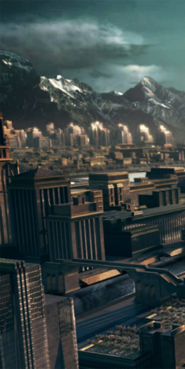

La dictature de Panem
Accueil
Ce site traite du livre et du film adapté,
Hunger Games. Vous allez découvrir
comment le Capitole gouverne le peuple
de Panem de façon dictatoriale.

Livre original par Suzanne Collins sites
Article sur le livre
Chaque année au sein de la nation de Panem, des jeux sont organisés où 24 joueurs ont l’obligation de s’entretuer afin de survivre.
Article sur l’élément

Panem est divisée en douze Districts tous gouvernés par un président cruel, considéré par le peuple impuissant comme un dictateur.
Article sur le film

Le film adapté du premier tome est fidèle à l’histoire du livre, il met en image, le Capitole, la dictature ainsi que le soutien du peuple.